Clouding in Ceramic Glazes
There a many factors to deal with in your ceramic process to achieve transparent glazes that actually fire to a crystal-clear glass
Details
It seems logical that a transparent glaze would fire transparent (or stained transparent). Commercial ware often sports brilliant clear-as-crystal glazes, they make it look easy. But this is far from the truth. For certain bodies (e.g. low fire whites, bone china) transparent glazes seem to work almost every time. But on others, it can be very difficult to achieve a crystal clear (e.g. terra cotta). In the past, when lead-as-a-flux was common, clear glazes were actually easier. But today we mostly rely on fluxes like boron, sodium, lithium and zinc at low and middle temperatures - it is more difficult to create crystal-clear glasses. Even when we source these using frits. At higher temperatures, materials like feldspar, calcium carbonate, dolomite and talc supply fluxes, these do not melt to a brilliant clear glaze nearly as well as frit-based ones at lower temperatures. That is one reason why underglaze decoration just does not work well on high-temperature stoneware (by 'well' I mean bright colors coming through a perfectly transparent overglaze). Or even porcelain, unless it is bisque-fired to vitrification. Even at middle temperatures, it can be tricky to develop body/underglaze/overglaze/firing combinations that enable transmitting the full vibrance of the color through a transparent glass. One of the most impressive accomplishments in ceramics is low fire terra cotta embellished with a brilliant thick transparent glass, showcasing the warm earthen-red color.
Clouding is most often, but not always caused by micro-bubbles. It can also be crystals growing in the glass, phase changes that can mar transparency and boron blue (which is also crystalline in nature).
For glazes to fire completely transparent everything has to be just right. Contributing factors to bubble clouding include firing schedule and firing temperature, glaze thickness, laydown density, application method, the amount of frit in the glaze recipe, the presence of carbonates (especially colorants) in body or glaze, the presence of particulates in the body (that generate gases of decomposition), the firing temperature of the bisque, the degree to which the body will be vitrified, the degree to which the glaze will melt, the viscosity and surface tension of the glaze melt, the chemistry of the glaze, the presence of unmelted particles in the melt (to act as a fining agent), the quality of the frit, the particle size of the glaze materials, and more. This means that you need to five attention to a range of factors before you succeed in getting a transparent glaze to fire clear.
It is important to understand the mechanisms under which your glaze becomes cloudy, this is the best way to avoid it happening. Hopefully, some of the pictures here will give you ideas on changes to your process to reduce this problem.
Related Information
What material makes the tiny bubbles? The big bubbles?

This picture has its own page with more detail, click here to see it.
These are two 10 gram GBMF test balls of Worthington Clear glaze fired at cone 03 on terra cotta tiles (55 Gerstley Borate, 30 kaolin, 20 silica). On the left it contains raw kaolin, on the right calcined kaolin. The clouds of finer bubbles (on the left) are gone from the glaze on the right. That means the kaolin is generating them and the Gerstley Borate the larger bubbles. These are a bane of the terra cotta process. One secret of getting more transparent glazes is to fire to temperature and soak only long enough to even out the temperature, then drop 100F and soak there (I hold it half an hour).
Slow cooling vs. fast cooling on a cone 6 transparent glaze
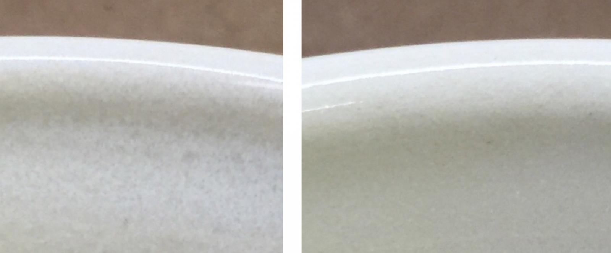
This picture has its own page with more detail, click here to see it.
These are the inside uppers on two mugs made from the same clay with the same clear glaze. The one on the left was fired in a large electric kiln full of ware (thus it cooled relatively slowly). The one on the right was in a test kiln and was cooled rapidly. This glaze contains 40% Ferro Frit 3134 so there is plenty of boron and plenty of calica to grow the borosilicate crystals that cause the cloudiness in the glass. But in the faster cooling kiln they do not have time to grow.
The perfect storm to create boron-blue clouding at low fire
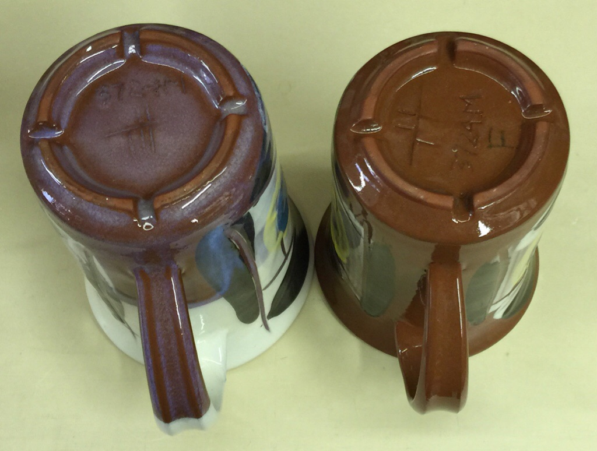
This picture has its own page with more detail, click here to see it.
Two clear glazes fired in the same slow-cool kiln on the same body with the same thickness. Why is one suffering boron blue (1916Q) and the other is not? Chemistry and material sourcing. Boron blue crystals grow best when there is plenty of boron (and other power fluxes), alumina is low, adequate silica is available and cooling is slow enough to give them time to grow. In the glaze on the left B2O3 is higher, crystal-fighting Al2O3 and MgO levels are a lot lower, KNaO fluxing is significantly higher, it has more SiO2 and the cooling is slow. In addition, it is sourcing B2O3 from a frit making the boron even more available for crystal formation (the glaze on the right is G2931F, it sources its boron from Ulexite).
A light bulb moment in solving bubble clouding:
The same black engobe with two transparent glazes.

This picture has its own page with more detail, click here to see it.
This is a buff stoneware body, Plainsman M340. A L3954F black engobe was applied inside and upper-outside at leather hard. The piece was fired at cone 6 using the PLC6DS schedule. The inside, totally clouded glaze, is G2926B. Outside is GA6-B Alberta Slip amber transparent. This inside glaze is crystal-clear on other bodies (and on this one without the black engobe). The black stain in the engobe appears to be the issue. How?
Underglazes (or engobes) become a semi-dense layer and impede LOI by slowing gas diffusion. If the glaze then melts early and lacks viscosity, remaining channels of escape are sealed (increasing bubbling dramatically). Double-melt interfaces can form between vitreous engobes and glaze when the former softens, the clear glaze begins melting. Gases get trapped at the boundary, being generated at the exact wrong time during the firing.
Look at the outside amber transparent glaze, GA6-B. Although also early melting and on the same engobe, it has very little micro-bubble clouding! Why? It contains a lot of Alberta Slip, a material that is not finely ground like others. Particles across the range from 60-200 mesh are present; these are likely acting as a fining agent that enables bubble merging. The larger bubbles break at the surface because of sufficient melt mobility and lower melt surface tension.
Transparent glazes often work poorly on dark stoneware bodies
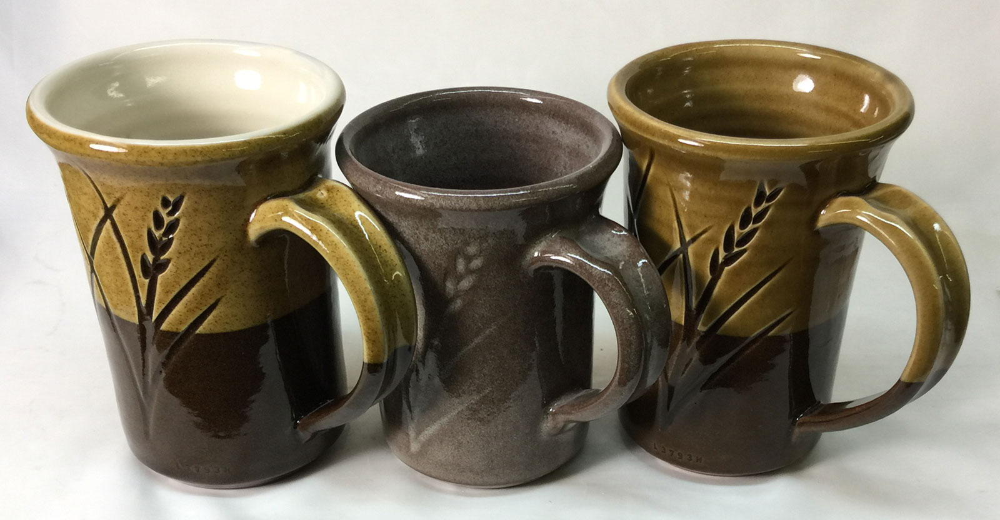
This picture has its own page with more detail, click here to see it.
These are fired in cone 6 oxidation. They are all the same clay body (Plainsman M390). The center mug is clear-glazed with G2926B (and is full of bubble clouds). This dark body is exposed inside and out (the other two mugs have L3954B white engobe inside and midway down the outside). G2926B clear glaze is an early-melter (starting around cone 02) so it is susceptible to dark-burning bodies that generate more gases of decomposition - they produce the micro-bubble clouding. That being said, the other two glazes here are also early melters - yet they did not bubble. Left: G2926B plus 4% iron oxide. That turns it into an amber color but the iron particles act as a fining agent (vacuuming up the bubbles)! Right: Alberta Slip GA6-B. It also fires as an amber-coloured glass, but on a dark body, this is an asset.
Our G2926B glaze may not work on dark burning clays
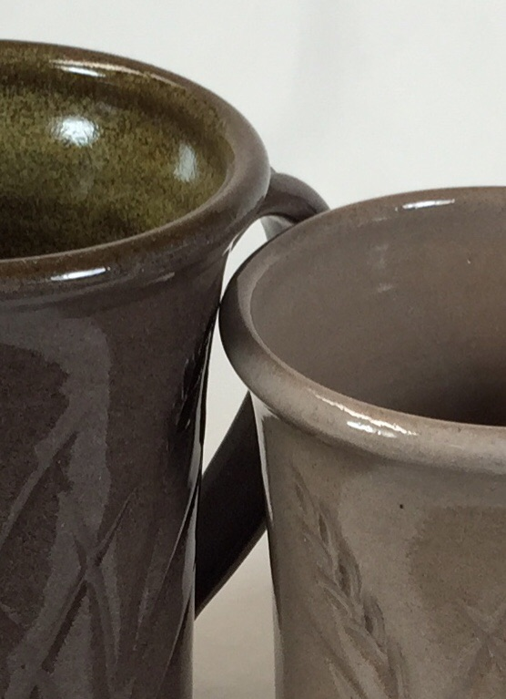
This picture has its own page with more detail, click here to see it.
These two glazes, applied to the outsides of these mugs, both fire as brilliant glass-like super-transparents. But on this high-iron stoneware, from which both pieces are made, only one is working well. G3806C (on the outside of the piece on the left) melts more, it is fluid and much more runny. This melt fluidity gives it the capacity to pass the micro-bubbles generated as the body gases during firing. G2926B (right) works great on porcelain and buff stoneware but it cannot clear the clouds of bubbles coming out of this body (the bubbles are actually partially opacifying it). Even the normal glassy smooth surface has been affected. The moral: Potters need more than one base transparent recipe. Being able to host colors, opacifiers and variegators is nice, but sometimes just a transparent that works well is needed. An interesting trade-off of reactive melt-fluid glazes is that, while they develop more interesting surfaces, their lower SiO2 and Al2O3 contents make them susceptible to crazing, settling of the slurry and cutlery marking.
Terra cotta transparent glaze: Too thick and just right
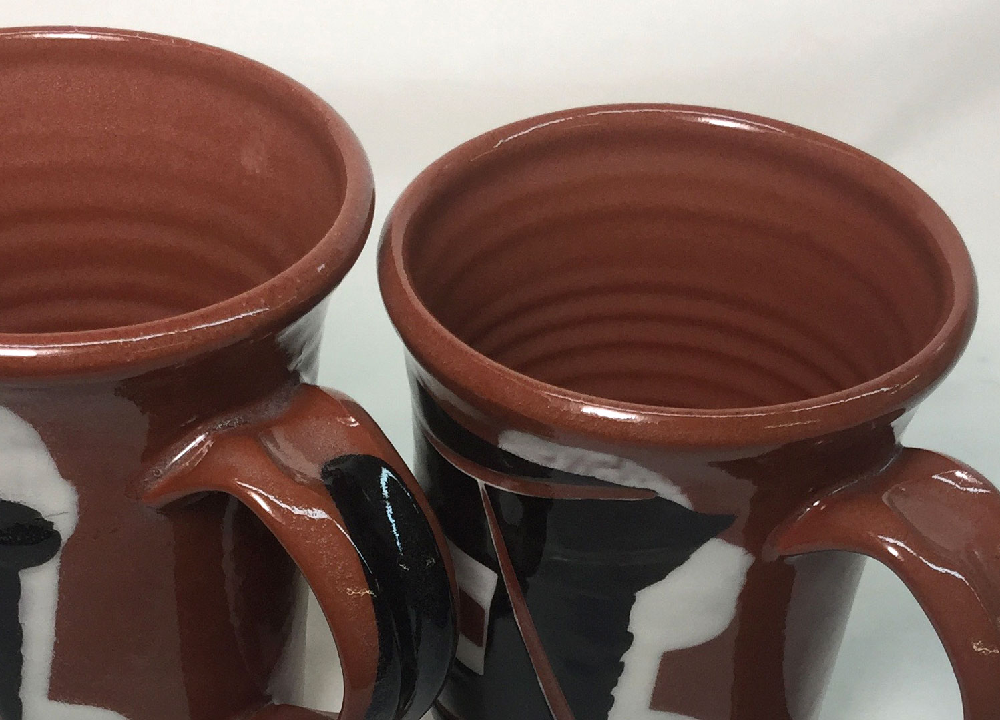
This picture has its own page with more detail, click here to see it.
When clear-glazing terra cotta ware (Plainsman L215 here) an important issue is glaze thickness. The mug on the left was double-dipped (so suspended bubbles are present in the handle recess, thumb-hold and along its edges). The glaze needs to be thick enough so that it feels glassy smooth but thin enough to avoid the bubbles. Normally, if applied the thickness of the one on the left, it would be completely milky, filled with micro-bubble clouds. Why has it not done so here? Because it is fired at cone 03 (using G2931K glaze and the C03DRH firing schedule). An added benefit is that the body is so much stronger than it would be if fired at cone 06 or 04. And the underglazes work fine.
Glaze bubbles behaving badly!
We see it in a melt fluidity test.

This picture has its own page with more detail, click here to see it.
These melted-down-ten-gram GBMF test balls of glaze demonstrate the different ways in which tiny bubbles disrupt transparent glazes. These bubbles are generated during firing as particles in the body and glaze decompose. This test is a good way to compare bubble sizes and populations, they are a product of melt viscosity and surface tension. The glaze on the top left is the clearest but has the largest bubbles, these are the type that are most likely to leave surface defects (you can see dimples). At the same time its lack of micro-bubbles will make it the most transparent in thinner layers. The one on the bottom right has so many tiny bubbles that it has turned white. Even though it is not flowing as much it will have less surface defects. The one on the top right has both large bubbles and tinier ones but no clouds of micro-bubbles.
Clouding in a cone 7 clear glaze after ware in use
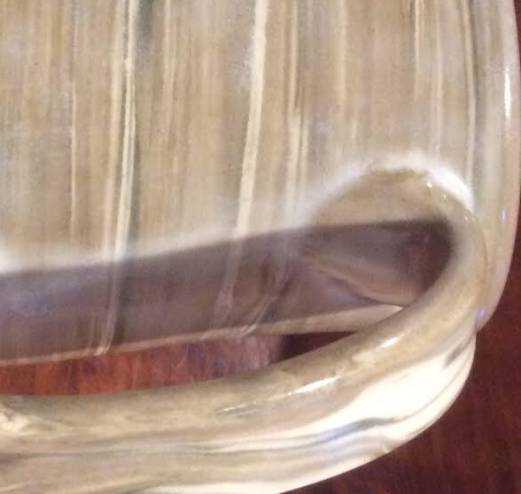
This picture has its own page with more detail, click here to see it.
It was a clear glass out of the kiln, the 20x5 recipe. First, it would be helpful to look at the cloudy areas under a good microscope. Is it happening on the surface, under the surface or at the glaze:body interface. If the latter, the glaze chemistry could give clues about whether it is likely to be vulnerable to leaching (and thus a surface issue). In this case, the cloudy areas are occurring where the glaze is thicker (around the handle join). Perhaps the body is waterlogging and the water is migrating up into bubble networks and making them visible.
Iron oxide vacuums up glaze bubble clouds at cone 6
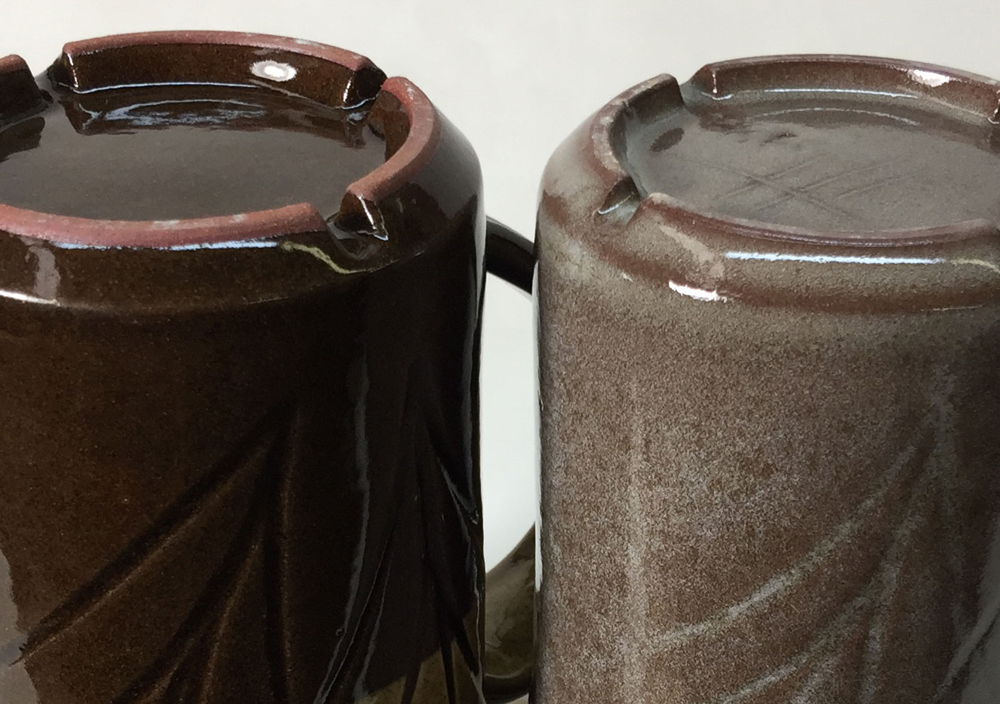
This picture has its own page with more detail, click here to see it.
These two mugs are the same dark burning stoneware (Plainsman M390). They have the same clear glaze, G2926B. They are fired to the same temperature in the same C6DHSC firing schedule. But the glaze on the left has 4% added iron oxide. On a light-burning body the iron changes the otherwise transparent glass to honey colored (with light speckle because of agglomerates). But on this dark burning clay it appears transparent. And, amazingly, the bubble clouds are gone! We have not tested further to find the minimum amount of iron needed for this effect but with other glazes 2% is working. Further testing is also needed to determine how the degree of mixing and higher percentages of iron oxide improve or degrade the clarity of the fired glass.
2% iron oxide in a glossy terra cotta glaze gives better color, less clouding

This picture has its own page with more detail, click here to see it.
Both pieces are the same clay body, Plansman L215. Both are fired to cone 03. Both are glazed using G1916Q borosilicate recipe. The glaze on the piece on the left has 2% added iron oxide (sieved to 80 mesh). Each particle or agglomerate of iron (which is refractory in this situation) acts to congregate the micro-bubbles so they can better exit the glaze layer. Notice also how much richer the color is as a result. The piece on the right, without the added iron oxide, is neither as red nor as transparent. Of course, I had to be careful not to apply the glaze too thickly on both.
G1916QL1 brushing glaze fired to cone 06, 05, 04
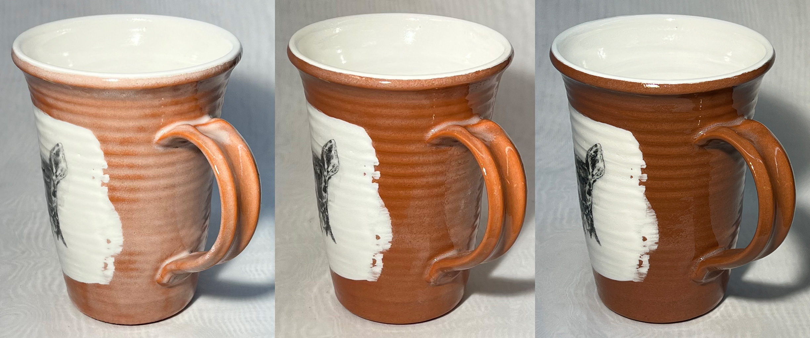
This picture has its own page with more detail, click here to see it.
The same mug fired at increasing temperature declouds the glaze and darkens the color of the terra cotta body. Two coats of the G1916QL1 transparent glaze, prepared as a brushing glaze, were initially applied to this Plainsman L215 terra cotta. The extra cone, and the 60F degrees that go with it, greatly helped to clear the bubble clouding by cone 05 (center). But 60F more degrees, to cone 04, both darkened the terra cotta clay and further cleared the bubbles.
These two transparent glazes are opposites:
In melt fluidity and surface tension

This picture has its own page with more detail, click here to see it.
This cone 04 flow tester compares two commercial low-fire transparent glazes. Their different chemistry strategies are revealed by the shape of these melt flows. While 3825B appears to have the higher melt fluidity, it also has much higher melt surface tension. This is evident in the narrow, rope-like stream and the way the flow meets the runway at a high angle before pulling into a rounded bead. A, by contrast, spreads and wets the runway, meandering downward in a broad, flat and relatively bubble-free river.
This difference is important in low-fire ware because these glazes must pass far more gases and bubbles than high-temperature glazes. The lower surface tension of A aids bubble release and healing after bubbles break. A is Amaco LG-10. B is Crysanthos SG213 (Spectrum 700 behaves similarly, although flowing less). Both approaches have advantages and disadvantages and are worth testing in your application.
Commercial glazes may or may not work on your clay body
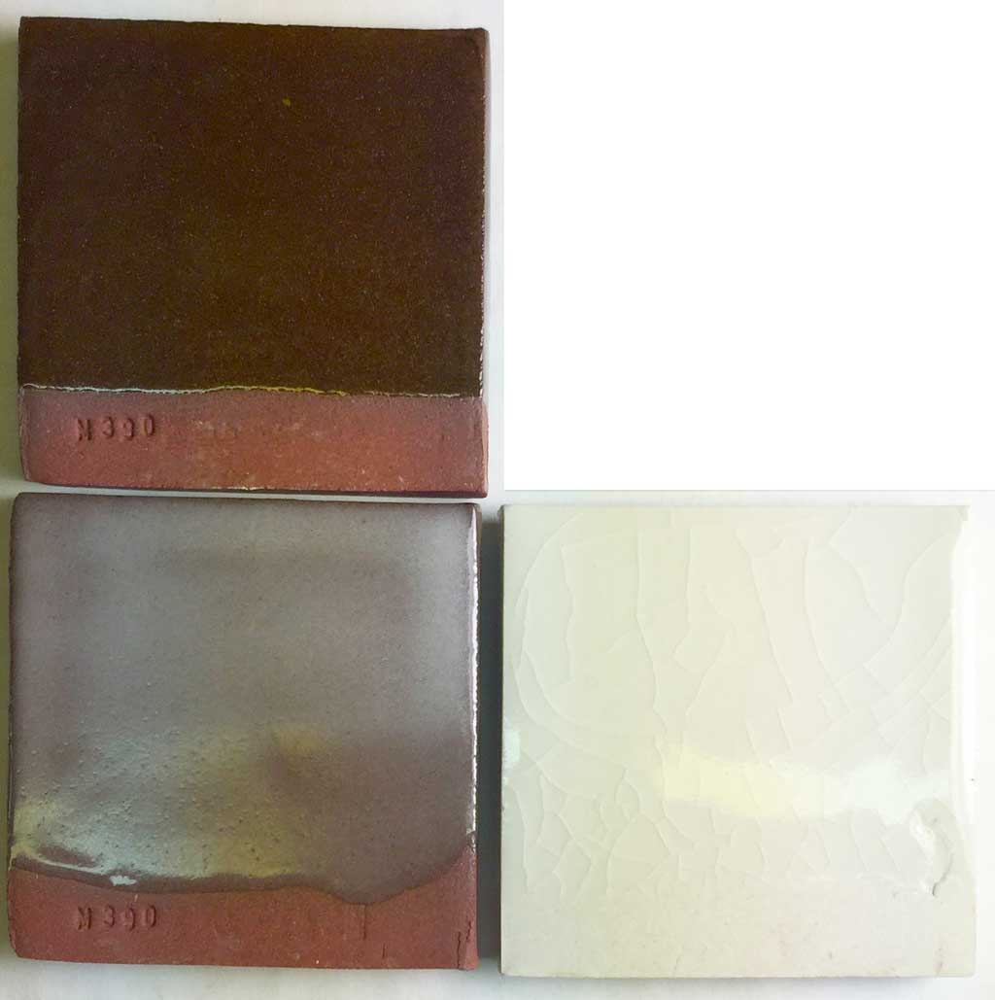
This picture has its own page with more detail, click here to see it.
Left two: Plainsman M390 stoneware. Lower right: M370 porcelain. The bottom two samples are a popular cone 6 ultra clear commercial bottled glaze. On the porcelain, it is crazing. On the red clay it is saturating with micro-bubbles and going totally cloudy, with so many ripples in the surface the texture has become satin. Whose fault is this? No ones. This glaze is simply not compatible with these two bodies. The one on the upper left has almost no bubbles and no crazing. It is the GA6-B recipe. It is well-documented and easy to adjust.
Clouding varies with these cone 04 terra cotta glaze recipes
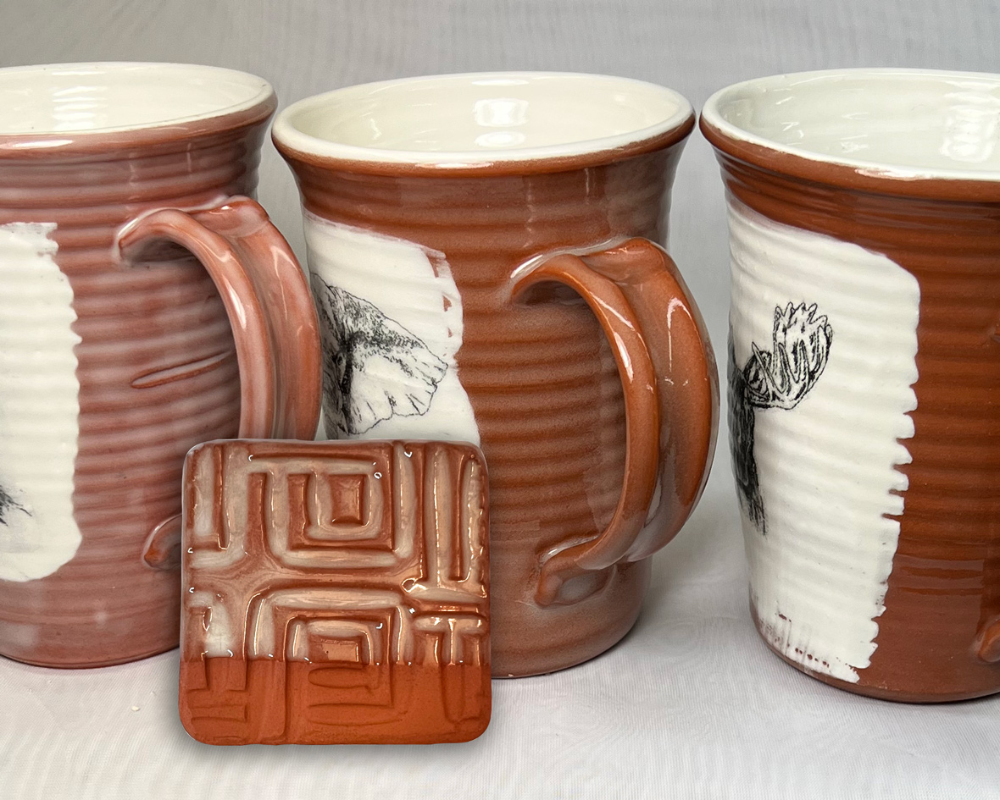
This picture has its own page with more detail, click here to see it.
These three mugs are made from L215 and fired to cone 04 (in a typical fast firing). The clear glazes are left: G3879E, middle: G2931K and right: G3879F1. The latter appears to be the most promising for creating the most transparent (although it is also applied a little thinner than the other two). That being said, the variegation of the cloudy center glaze, G2931K, is aesthetically quite striking when applied thickly enough (as shown in the sample test tile).
Thick application clouds this transparent glaze:
On terra-cotta bodies this is an issue
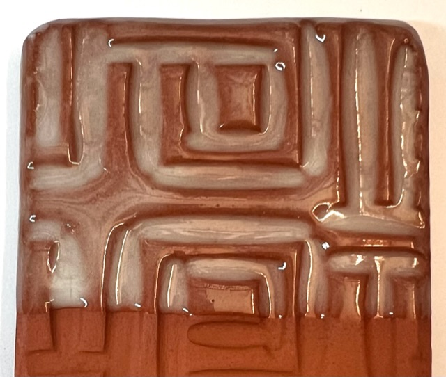
This picture has its own page with more detail, click here to see it.
Glaze clouding is a universal issue in ceramics. Terra cotta bodies often demonstrate this well. Pretty well all transparent glazes, even commercially available ones, can cloud, especially when applied thickly. This example is G2931K, it can be beautifully crystal clear when thin. But, as thickness increases, this happens. We ball-milled it to see if that would help, but as you can see, that has not impacted the problem. This is a dipping version, so that is part of the reason why it is easy to get it on too thick.
One of the advantages of brushing glazes is the ability to carefully control thickness. Many are formulated with a low specific gravity, requiring multiple layers for adequate thickness. Two coats rather than three are often better for this type of body.
Links
| Glossary |
Transparent Glazes
Every glossy ceramic glaze is actually a base transparent with added opacifiers and colorants. So understand how to make a good transparent, then build other glazes on it. |
| Glossary |
Ceramic Glaze Defects
Ceramic glaze defects include things like pinholes, blisters, crazing, shivering, leaching, crawling, cutlery marking, clouding and color problems. |
 PayPal | No tracking, No ads, No paywall, No transient content! Just organized, concise information constantly updated and improved. Was this helpful? Consider supporting me. |
| By Tony Hansen Follow me on        |  |
Got a Question?
Buy me a coffee and we can talk 

https://digitalfire.com, All Rights Reserved
Privacy Policy